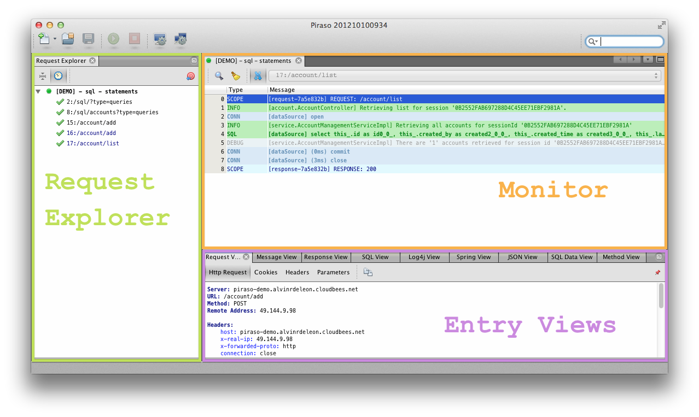
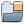
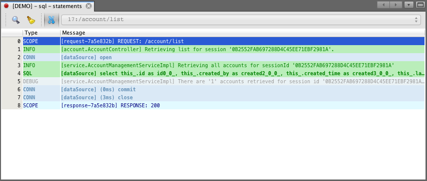
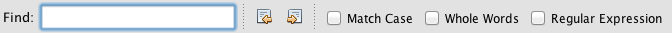

Overview
Piraso Client is a NetBeans Platform application that allows user to monitor Piraso enabled web application.
Basic Concepts
To get the most out of its capabilities and features, you should be familiar with its concepts. Concepts describe the basic notions of the tool.
- Monitor
- A monitor contains context logging monitoring preferences. When created this will open in the Monitor Window and lets you start monitoring.
- Context Logger
- This determines the information we want to monitor in the Piraso enabled application. Example are SQL and log4j context loggers, which let you monitor SQL executions and log4j log entries respectively.
- Profiles
- Profiles are set of monitors. When created this will open all associated monitors in the Monitor Window.
- Request
- This determines the entries scope in a monitor. Monitor entries are usually group per request.
Workspace
Below shows the Piraso client application workspace.

Note
To reset the windows to the original arrangement just click onWindow > Reset Windows menu.General Toolbar
| Click this to create new Profile or Monitor instances. | |
|  | Click this button to open a saved Monitor request entries. |

|
Click this button to save the currently selected Monitor instance. |

|
Click this button to reconnect the disconnected Monitor instance.
|
Click this button to disconnect the Monitor instance.
|
|
| Click this button to manage Monitors. | |
| Click this button to manage Profiles. |
 on the tab means that the Monitor instance is connected.
on the tab means that the Monitor instance is connected. on the tab means that the Monitor instance is disconnected.
on the tab means that the Monitor instance is disconnected.Monitor Window
The window is tab-based. When you create a new monitor instance, it opens in its own tab. This displays the monitor entries in a table captured from the piraso enabled application.

Toolbar
|
|
Click this button to clear the current monitor request entries. |

|
Click this button to initiate a new search. This toggles the display of the search pane. 
|
|
|
Click this button to toggle the auto-scrolling of received from the monitored application.
When the auto-scroll |
Request Explorer
Displays all Monitor instance and all its requests on tree view.

Toolbar
| Click this button to collapse the request tree view. | |

|
Click this button to toggle showing of colored nodes for recent requests.
|
| Select a monitor and click on this button to target the monitor node on the request tree view. |